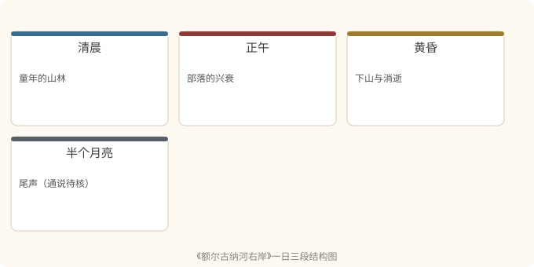

额尔古纳河右岸
一、基本信息
| 作者 | 迟子建 |
|---|---|
| 成书/出版 | 2005年出版（中国作家网官方名单 C012：北京十月文艺出版社）；2008年10月获第七届茅盾文学奖（C016） 历届茅盾文学奖获奖作品一览（中国作家网）（官方文学机构） |
| 国别/地区 | 中国 |
| 时代 | 现当代 · 当代 |
| 体裁 | 长篇小说 |
| 语言 | 汉语（白话） |

《额尔古纳河右岸》一日三段结构图（主题·结构图）
二、创作背景
中国作家网（C016）：'2004年，因为一篇讲述鄂温克族画家柳芭命运的文章，让迟子建想要动笔写一写关于这个民族的历史'；她赴根河市'通过追踪驯鹿的足迹找到了山上的猎民点，也找到了书中女酋长的原型'。
题材：东北边疆驯鹿鄂温克部落百年的生存与变迁（C016 语境）。
三、内容脉络
以年近九旬的鄂温克最后女酋长女人的自述展开：清晨/正午/黄昏（三部结构——通说待核）。
萨满、驯鹿、希楞柱与山林狩猎生活——与现代文明的冲突（C016 语境+通说待核）。
四、主要人物表
| 人物 | 身份 | 说明 |
|---|---|---|
| 最后的女酋长女人 | 叙述者 | 原型为女酋长（C016：找到了书中女酋长的原型） |
| 尼都萨满等 | 萨满 | 通说待核 |
五、主题与艺术特点
- 弱小民族的百年沧桑（C016）。
- 自然与文明的挤压：下山定居的挣扎（C016：新的生活方式与文化传统的冲突）。
- 逝去的诗意生活：'这部小说浸润着我对那片土地挥之不去的深深依恋'（C016 迟自述）。
六、影响与评论
- 中国作家网：2008年10月获第七届茅盾文学奖；被读者喻为'额尔古纳河的《百年孤独》'（C016）。
以她为原型的小说曾获茅盾文学奖——《额尔古纳河右岸》（中国作家网）（官方文学机构） - 中国作家网官方名单：第七届（2003—2006）获奖作品、北京十月文艺出版社（C012）。
历届茅盾文学奖获奖作品一览（中国作家网）（官方文学机构）
七、阅读建议
难点
- 鄂温克族名物（希楞柱/驯鹿/萨满）注释。
- 自述体的时间跨度。
- 《额尔古纳河右岸》（北京十月文艺出版社，C012 官方名单口径）。
对照《百年孤独》：两种'百年'叙事。
八、待核实
- 清晨/正午/黄昏三部结构说待核。
- 人物名（尼都萨满/拉吉达/瓦罗加等）核对。
- 玛丽亚·索原型与2022年直播走红细节待核。
本页主要来源
迟子建的其他收录作品：额尔古纳河右岸